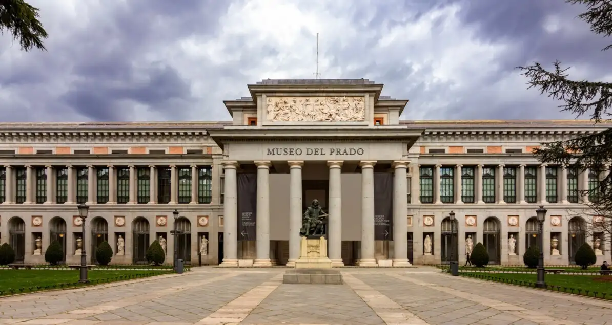

Általanos informaciók:
| Építés kezdete | 1785 |
| Nyitás éve | 1819 |
| Bővítés időszaka | 1913-1916 |
| Ujjárendezett kiállítás | 1955 |
| Festmények száma | ~7600 – 8200 darab |
| Rajzok száma | ~9000 darab |
| Szobrok száma | ~1000 darab |
A múzeum naponta 10:00–19:00 óra között látogatható, minden korosztály számára különleges kiállításokat kínálva. Rengeteg kedvezmény is elérhető, így mindenkinek esélyt adva a kollekció megtekintésére. → Árlista
A Prado Múzeum időszakos kiállításai különleges lehetőséget kínálnak arra,
hogy a látogatók az állandó gyűjtemény mellett új művészeti témákat,
alkotókat és korszakokat is felfedezzenek.
Az itáliai modorban. Spanyolország és a mediterrán gótika, 1320–1420
Prado. 21. század
Valeriano D. Bécquer (1834–1870): Életképfestmények
Az Államtanács és a Prado Múzeum
Ricardo de Madrazo (1852–1917): Rajzok és akvarellek
A mérnöki tudomány a Pradóban – Híd a művészet és a technika között